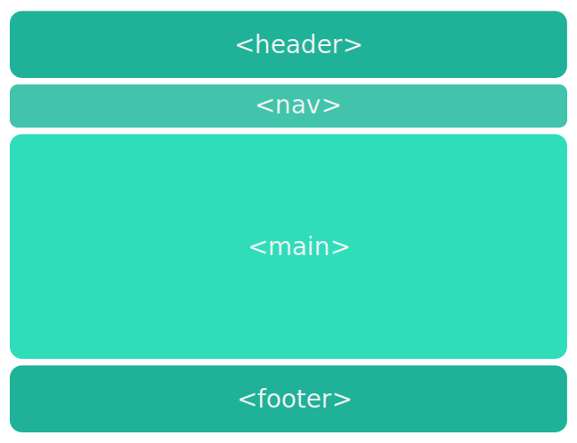
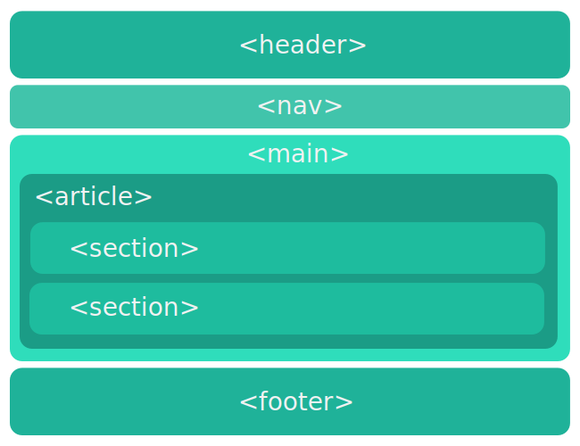

Чем отличается семантическая вёрстка от обычной?
Раньше и сейчас
До появления HTML 5, структура сайтов создавалась с помощью блочной верстки, где расположение элементов веб-страницы определяется с помощью разметки. Приходилось использовать блочный тег <div> и таблицы стилей CSS. Написание такого HTML-кода определяет только внешний вид веб-страницы.
С появлением новой версии HTML5, появилось множество семантических элементов, которые прямо отображают свое назначение и разделяют код на логические блоки. Использование их в соответствии с предназначением предполагает создание логичной и последовательной структуры страницы. Благодаря новым семантическим тегам расширяется и рационализируется html-разметка документов, их использование может оказать влияние на индексацию сайта в поисковиках.
Простой пример семантической верстки
В данном примере довольно легко определить какую роль выполняет каждая часть страницы. Когда вы начинаете использовать семантические теги HTML5, то лучше всего начать с простых — <header>, <nav>, <main> и <footer>. Пусть ваше исполнение будет довольно простым, но правильным, чем очень сложным и неправильным. Даже минимальное, но правильное использование таких тегов повышает взаимодействие с поисковыми системами, в противном случае вы заработаете больше проблем, чем решите.
Использование <section> и <article>
Использование <section> и <article> является уже более сложным примером семантической верстки. Тут появляется иерархия в главном контенте. Тег <article> охватывает и определяет основной контент внутри тега. Внутри <article> вложено несколько разделов <section>, которые являются подтемами самой статьи. Нужно помнить, что <section> формирует часть чего-то, а <article> существуeт сама по себе.
Использование <aside>
Так же в семантической верстке довольно часто используют тег <aside>. В первом случае контент в этом теге связанный с основным контентом в <article>. В нем желательно размещать дополнительный контент. То есть статья <article> должна быть понятна и без секции <aside>.
Во втором случае элемент <aside> косвенно связанный, то есть ему не обязательно содержать дополнительную информацию для основного контента. Он может быть применен для блоков под основным контентом и содержать в себе заголовок, текст, ссылки на другие страницы, рекламу.